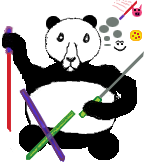
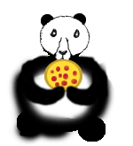
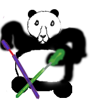
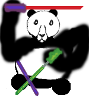

This "Panda" is a mostly stronger beast of the world. He is immune and he can't be trafficked with their enemies. The Lord of Pigs "Pan Paskuda"tried to destroy him,but fall.
and The "Panda" changed him with pizza and he ate him.

The favorite food of this Panda is pizza. This is probably why he has the habit of turning his opponents into pizza and eating them.

This Panda thinks that he has no worthy opponent in this world, maybe that's why he is not in a hurry to choose a katana and does it in very different and strange positions.

This panda has the habit of mocking opponents, maybe that's why every time he is attacked, he doesn't pay attention to them and flexes muscles.